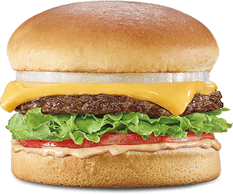

Course Announcements (Wed 1/12)
Due Dates:
CL2 due tonight (11:59 PM)
A1 due Mon 1/17 (11:59 PM)
Notes:
Waitlist: If you were spots 1-5, check your email (Thanh Maxwell); you can now enroll; I don’t anticipate others being enrolled
No class or office hours this Monday (Dr. MLK, Jr. Day)
Q&A
Q: I’m still confused about %whos. From my understanding if you run it, it shows all the variables in your code? With the type and what it’s assigned to as well?
A: That’s right - it shows all the variables you’ve defined in that current namespace. Every time you open a notebook, you connect to a kernel. This kernel allows you to execute code. When you execute code, you store variables in your namespace. When you run %whos it tells you everything stored in your namespace.
Q: why is it called snake_case? Also, is there more to code style? Or is what we learned in this lecture all there is to it?
A: snake_case b/c everythign is on the same level like the body of a snake. camelCase is another common case, where the upper case letters are the “humps” of the camel’s back.
Q: How to change variable types; for example after importing a dataset.
A: Take a look at “typecasting in python” results when you google! (We’ll get to this later in the course.)
Q: How are coding assignments graded? Is it based on correctness or accuracy of the code?
A: They are graded programmatically based on the assert statements in the assignment - both visible and hidden. Correctness/accuracy matter. This will make even more sense after we grade A1.
Q: When you run the namespace in the jupyter nb is it supposed to give you an output?
A: Only if you’ve already defined variables in your namespace (meaning, run some code to create some variables).
Q: What are examples of mutable variables? Or are they anything other than the variables we discussed in lecture today?
A: We’ll get there soon! But, lists and dictionaries are two common mutable types we’ll soon get comfortable with!
Q: what happens when the values for different variables are identical?
A: We’ll talk a bit about this soon, but the answer is “it depends.” Sometimes python stores them in different places in memory; sometimes in the same. For this course, the details won’t matter a ton.
Q: I am curious if restarting the kernel means our memory is cleared and then reallocated for the variables in our code?
A: Your namespace/memory is cleared. When you restart the kernel no variables have been created yet. Code will have to be re-executed to store the variables in memory again.
Q: What exactly is the purpose of None type? How would it be used?
A: The example I gave in class is think about the gradebook for this class right now. Y’all haven’t had any assignments graded yet, so each value would be None. We wouldn’t want to use zero…b/c then students would be concerned they got no credit on the assignment! None is a good placeholder when you want to demonstrate the idea/concept of “nothing.”
Q: i am curious about why python does not need to specify variable type like other languages
A: This is b/c Python is “dynamically typed.” The variable type is inferred directly from the code/syntax.
Q: What are the different colorings for the different variables?
A: black = variable; green = function or number; purple = operator; bold and green = reserved word in Python; red = warning or error
Q: Is it possible to modify the namespace within the python code without explicitly creating variables? For example, deleting specific variables or creating variables to track the changes in other variables.
A: Yup, del will remove a variable from the namespace. As for the last example, not totally sure what you mean…so not sure if it is or is not possible.
Q: When you print a variable, this makes it so that the variable can be used later or makes it so that it appears if you were to type %whos for example, correct?
A: Nope - print simply displays the variable to your screen. To print something, it has to already exist/have been defined. So the = statement creates the variable. After this, it can be printed.
Q: Will we be solving complex math problems on tests or homework assignments?
A: Nope.
Q: When calculating with floats, is there a best practice to make sure floats produce answers with the accuracy you want it to produce (for example, making sure an operation produces 2.0 and not 2.00000…001)? I noticed something like this happened on the assignment for this week and want to try and reduce that happening if possible.
A: There are ways (like forcing a certain number of decimal places)…but they won’t be super important for this class. For example, if I ask you to do some operation that should return 2.3 as an answer, I am going to accept that value with uncertainty around it as an answer…to avoid any float/rounding issues. So, not something you have to worry about for this class.
Q: Is there a way to print more than one variable at once? I’ve been using print(variable) for each variable in order to test what I did was right and it gets a bit tedious.
A: Yup - you can separate the variables by a comma in your print statement, for example: print(var_a, var_b).
Q: I am confused that is there a difference between using single and double quotes in python?
A: No difference - pick one and stick with it.
Q: Can you assert a string? What does it mean to do so? What are you asserting?
A: Yes. If you assert a string, it asserts that the string is anything other than an empty string, so if there’s something in the string, the assert will pass silently. What’s more comment is to assert that the value of the string is exactly equal to a string. We’ll see this more in coming assignments.
Q: Can we work on A1 or any assignments for that matter in increments? I.e., if I start A1, may I leave it for some time and then come back to it without penalty or anything getting lost?
A: Yes, you are encouraged to work incrementally.
Q: I am kind of confused the grading of Coding lab and also assignments.
A: Coding labs are graded on concerted effort. We (staff) look through to see if it looks like you spent ~1h of time on the coding lab. It’s ok if there are errors, for example; you can still get full credit. Assignments are autograded, so they are graded for correctness. You’ll see an example of this process soon with A1.
Q: I forgot to fill out a daily participation survey for Friday’s (1-7) lecture. How do I submit this?
A: You don’t, but it’s for EC, so it’s not a big deal.
Q: Can you divide variables by both / and // ? because I tried both ways and they both work…
A: Yup, / gives you a float; // returns the integer
Q: Why both int(4) and int(‘4’) gives an output 4 but int(‘4.0’) raises an error?
A: Ah the joys/nuances of python! int('4.0') is interpreted the same as trying to convert the string ‘4.4’ to an integer…python just don’t know how to do it.
Q: can you convert a string (if it stores a number with a quotation mark) to integer type?
A: Yes, you would “typecast” this using str('6') for example.
Q: How does using the % and %who differ?
A: % returns the remainder after division; %who lists what’s currently stored in your namespace
Q: Will there be situations where you can use indents in code?
A: Yes! Loops, functions, conditionals - we’re getting there!
Course Announcements (Fri 1/14)
Due Dates:
A1 due Mon 1/17, but will be accepted for full credit through late deadline (Thurs 1/20; 11:59 PM)
Notes:
No class or office hours Monday (Dr. MLK, Jr. Day)
Prof Ellis make-up OH: Tuesday 1-3 PM (1/18; same Zoom link as on Canvas)
Coding Labs
Answer keys posted each week - check your work!
Reminder: we drop the lowest coding lab (no extensions)
Coding labs are for your exploration, knowledge - add notes, add comments, explain to yourself what you didn’t understand, try something out if you’re curious
Campuswire exists as a resource for Q&A
if code included, must be private to instructor & TAs
Q&A
Q: When you have ‘’, no space and nothing written in it, does it mean something? Or is it just empty?
A: This is an empty string. We’ll see how it can be useful to define an empty string and add to it when we get to loops.
Q: Are we often going to use the membership operators in assignments/coding labs?
A: Eh, we’ll use them but not as frequently as comparison or mathematic operators. We’ll see how they can be more helpful when we discuss collections.
Q: Can you go over the class example again on friday?
A: Not sure which you mean - mind making a campuswire post and I’ll explain more there?
Q: What’s the difference between = and ==?
A: = is for assignment. It stores what is on the right in the variable on the left. == is a for comparison. It checks for equality. It checks if the thing on the left’s value is exactly equal to the thing on the right’s value, returning either True or False.
Q: Also, in the section titled “Identity Operators,” I am confused about why a and c are not equal when they are both the same value. Is it because they are physically a different variable? A: They store the same value (are equal) but are not stored in the same place in memory (are NOT identical).
Q: I wanted to clarify that the skipped section of the notes regarding “is” and “is not” is not something we need to learn on our own.
A: Confirmed. You will not be tested on this.
Q: Lastly, on the homework, my string on the fourth test for Q1 continuously gets an error. What are potential issues that come up with strings?
A: Questions like this are best posted to campuswire - go ahead and post there, pelase!
Q: Can True == not False? I tried it out, but it said there was a syntax error.
A: Ah, this is a syntax case. For this to be True, you’d need parentheses: True == (not False) (not something I would test you on)
Q: I wonder why everytime I click “enter” in Python, I run a code instead of going to the next line.
A: Hmmmm…not sure. You may have changed a setting? This is something we could look at in Office Hours.
Q: Can we download the notebook in code instead of the PDF?
A: Yes, you’d download the .ipynb file (or .py if you’re downloading from datahub and just want the text file).
Q: How often do will we use boolean logic in coding? Like if we were to extend this to having a career in coding
A: A lot.
Q: When using “and” or “or “, do the mathematical expressions on the left and right sides of them have to be put in parentheses as a whole?
A: A somewhat unhelpful answer…sometimes. If you want to ensure everything to the left of and is considered together and then to the right of considered together, best to put parentheses around them.
Q: How can we use something returned later on in our code?
A: The cell where the variable is defined must be executed before the variable can be used.
Review: assert statements
assertstatements “pass silently” (give no output) when the statemetn afterassertevaluates asTrue
# true statements pass silently
assert True
assert 3 < 6
assert 'COGS 18 is the best!'
# false statements throw an assertion error
my_string = 'COGS 18 is the best!'
assert my_string == 'COGS 18'
---------------------------------------------------------------------------
AssertionError Traceback (most recent call last)
<ipython-input-4-9bd188c6bfb2> in <module>
2 my_string = 'COGS 18 is the best!'
3
----> 4 assert my_string == 'COGS 18'
AssertionError:
If one
assertstatement throws an error in a cell, no otherassertstatements in the cell are executed
assert False
assert 0
assert ''
---------------------------------------------------------------------------
AssertionError Traceback (most recent call last)
<ipython-input-8-4b9607fd8b1b> in <module>
----> 1 assert False
2 assert 0
3 assert ''
AssertionError:
We use
asserts to let you know you’re on the right track in assignments
For example, if the instructions told you to store the string ‘COGS 18 is the best!’ in the variable my_string
my_string = 'COGS 18 is the best!'
my_string
'COGS 18 is the best!'
happy_friday = 'I love COGS18'
assert happy_friday == 'I love COGS18'
type(my_string)
str
# visible test may be...
assert type(my_string) == str
# hidden test may be...
assert my_string == 'COGS 18 is the best!'
Functions¶
defining a function
defreturndefault values
keyword vs. positional arguments
executing a function
parameters
separate namespace
Vocab¶
Define/create/make a function: To set up and write the instructions for a function.
Execute/call/use a function: To actually use the pre-defined function.
Input/parameter/argument: A variable defined by the user that is put/passed in between the parantheses
()that comes after the function name.Output: The variable that is
returned to the user after the function is executed.
Functions¶

Modular Programming¶
Copy + Pasting the same/similar bit of code is to be avoided.
Functions are one way to avoid this.
Loops are another! (we’ll get to these soon…)
Functions for Modular Programming¶
Functions allow us to flexibly re-use pieces of code
Each function is independent of every other function, and other pieces of code
Functions are the building blocks of programs, and can be flexibly combined and executed in specified orders
This allows us to build up arbitrarily complex, well-organized programs
# you've seen functions before
# here we use the type() function
my_var = 'hi'
type(my_var)
str
# the function print() doesn't depend on type()
# but they can both be used on the same variable
print(my_var)
hi
Function Example I¶
When you use def, you are defining a function.
You are metaphorically writing the instructions for how to make the cheeseburger.
# define a function: double_value
# Notice that the parameter `num` is not explicitly defined with an =
# This is because it will be defined later by the user when they execute the function.
def double_value(num):
# do some operation
doubled = num + num
# return output from function
return doubled
# excecute a function by calling the function's name
# and defining the parameter within the parentheses
my_output = double_value(num = 2)
my_output
4
# equivalent function call
# Here the parameter `num` is defined without
# explicitly specifying the name of the parameter
double_value(2)
4
Function Example II¶
Here we are defining a function with multiple parameters
def add_two_numbers(num1, num2):
# Do some operations with the parameters
answer = num1 + num2
# Return the variable answer
return answer
add_two_numbers(5, 14)
19
# Execute our function again on some other inputs to double check
# that our function is working how we think it should
output = add_two_numbers(-1, 4)
print(output)
3
Function Properties¶
Functions are defined using
deffollowed by the name of the function, parentheses(), parameters within the parentheses, and then:after the parentheses, which opens a code-block that comprises the functionRunning code with a
defblock defines the function (but does not execute it)
Functions are executed with the name of the function and parentheses -
()withoutdefand:This is when the code inside a function is actually run
Inside a function, there is code that performs operations on the available variables
Functions use the special operator
returnto exit the function, passing out any specified variables
When you use a function, you can assign the output (whatever is
returned) to a variable
Clicker Question #1¶
Given the function defined below, what will the second code cell below print out?
A) 0 B) 2 C) 4 D) ‘2r.2 + 1’ E) ¯\_(ツ)_/¯
def remainder(number, divider):
r = number % divider
return r
ans_1 = remainder(12, 5)
ans_2 = remainder(2, 2)
print(ans_1 + ans_2)
2
Clicker Question #2¶
Write a function greet that takes the parameter name. Inside the function, concatenate ‘Hello’, the person’s name, and ‘Good morning!”. Assign this to output and return output.
A) I did it! B) I think I did it. C) I tried but I am stuck. D) Super duper lost
## YOUR CODE HERE
# TEST YOUR FUNCTION HERE
Default Values¶
Default Value Functions¶
Specify a default value in a function by doing an assignment within the function definition.
# Create a function, that has a default values for a parameter
def exponentiate(number, exponent=2):
return number ** exponent
exponentiate(3)
9
# Use the function, using default value
exponentiate(3)
9
# Call the function, over-riding default value with something else
# python assumes values are in order of parameters specified in definition
exponentiate(2, 3)
8
# you can always state this explicitly
exponentiate(number=2, exponent=3)
8
Positional vs. Keyword Arguments¶
# Positional arguments use the position to infer which argument each value relates to
exponentiate(2, 3)
# Keyword arguments are explicitly named as to which argument each value relates to
exponentiate(number=2, exponent=3)
exponentiate(exponent=3, number=2)
# Note: once you have a keyword argument, you can't have other positional arguments afterwards
# this cell will produce an error
exponentiate(number=2, 3)
Reminder, setting a default value for parameters is allowed during function definition.
(This may look like what we did above, but here we are including a default value for one parameter during function definition. During function execution, you can’t mix and match using positional vs. keywords)
def exponentiate(number, exponent=2):
return number ** exponent
Clicker Question #3¶
What will the following code snippet print?
def exponentiate(number, exponent=2):
return number ** exponent
exponentiate(exponent=3, number=2)
A) 8
B) 9
C) SyntaxError
D) None
Note: when using Keyword arguments position/order no longer matters
Function Namespace¶
Each function has its own namespace
Functions only have access to:
variables explicitly passed into them
variables defined inside the function
# You can check variables defined in the global namespace with `%whos`
%whos
Variables defined inside a function only exist within that function.¶
# Names used inside a function are independent of those used outside
# variables defined outside of functions are global variables
# global variables are always available
my_var = 'I am a variable'
print(my_var)
# define a function that uses my_var inside the function
def concat_self(my_var):
my_var = my_var + ' ' + my_var
return my_var
print(concat_self(my_var))
# see that my_var in global name space remains unchanged
print(my_var)
# only way to change my_var in global namespace
# is to assign to variable my_var in global namespace
my_var = concat_self(my_var)
print(my_var)
Code Style: Functions¶
Function names should be snake_case
Function names should describe task accomplished by function
Separate out logical sections within a function with new lines
Arguments should be separated by a comma and a space
Default values do NOT need a space around the
=
Functions: Good Code Style¶
def remainder(number, divider=2):
r = number % divider
return r
Functions: Code Style to Avoid¶
# could be improved by adding empty lines to separate out logical chunks
def remainder(number,divider=2): # needs space after comma
r=number%divider # needs spacing around operators
return r
Summary¶
how to define a function
how to execute a function
default values
position vs. keyword arguments
global namespace vs. local namespace
code style